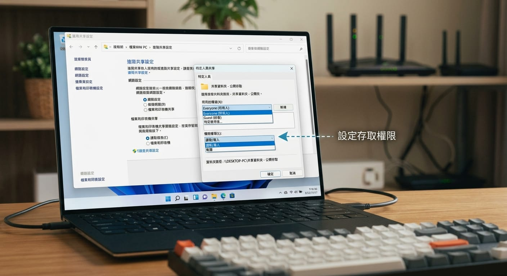
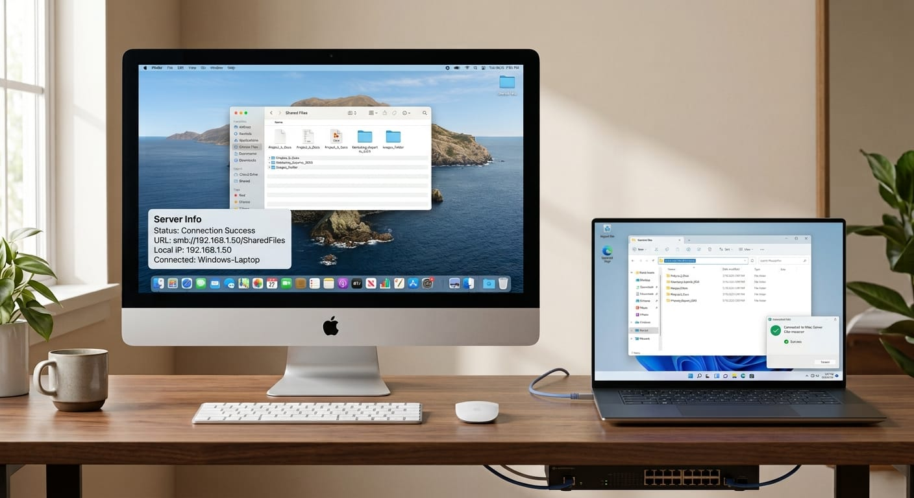

家裡裝置愈來愈多，情境也愈來愈常見：公司配的是 Windows 筆電，家裡擺的是 iMac；或者是爸媽一台 Windows、自己一台 Windows，想把照片、報告、影片互傳。很多人到現在還在用隨身碟拷來拷去，或是把檔案傳 LINE、傳 Email 給自己——小檔還好，一遇到幾 GB 的影片就卡住。
其實只要兩台電腦連在同一個家用網路（接同一台 Wi-Fi 分享器就算），就能用「檔案共享」直接互傳，速度比隨身碟快、也不用一直插拔。這篇就把三種組合一次講清楚：Windows ↔ iMac、Windows ↔ Windows，還有連不上時怎麼排查。
先搞懂：它們其實講同一種語言
你可能聽過 Windows 的「網路芳鄰」、Mac 的「檔案共享」，聽起來像兩套東西，但背後用的其實是同一個協定：SMB（Server Message Block）。
這代表什麼？代表 Windows 和 Mac 本來就能互相讀寫對方的共享資料夾，不用裝任何第三方軟體。你要做的只有兩件事：
- 在「要分享檔案的那台」把某個資料夾設成共享。
- 在「要拿檔案的那台」去連線那個共享資料夾。
搞懂這個分工，後面就都是照步驟點而已。
第一步：記下每台電腦的 IP 位址
連線時最穩的方式是直接用對方的 IP 位址（像 192.168.1.10 這種）。先把要分享檔案那台的 IP 查出來備用。
Windows 查 IP：按 Win + R，輸入 cmd 按 Enter，打 ipconfig，找「IPv4 位址」那一行。
Mac 查 IP：點左上角蘋果 →「系統設定」→「網路」→ 點你用的那個連線（Wi-Fi 或乙太網路），裡面會顯示 IP 位址。
小提醒：IP 可能會隨著重開機變動，Windows 和 Mac 都一樣。如果你很常互傳，可以到分享器後台把電腦設成「固定 IP」，或直接用電腦名稱連（下面各情境都會教，名稱不會隨 IP 變）。
情境一：Windows 分享、iMac 來拿
這是最常見的組合——Windows 當「倉庫」，iMac 去抓檔案。
在 Windows 上開啟共享
- 先打開網路探索：設定 →「網路和網際網路」→「進階網路設定」→「進階共用設定」。這裡會分「私人網路」「公用網路」「所有網路」三區——家用網路通常算私人網路，但保險起見直接在「所有網路」那區，把網路探索和檔案及印表機共用都打開（這樣不管系統把你家的連線歸在哪一區都涵蓋到）。
- 在檔案總管裡對著想分享的資料夾按右鍵 →「內容」→「共用」分頁 →「共用」。
- 在下拉選單選要給誰用：想簡單一點可以加
Everyone，權限看需求給「讀取」或「讀取/寫入」，按「共用」完成。 - 完成後會顯示一行網路路徑，像
\\DESKTOP-ABC123\分享資料夾，記下來。

關於「密碼保護的共用」：Windows 預設開著，所以 Mac 連過來時會要你輸入「這台 Windows 的使用者帳號和密碼」。這是正常的，輸入 Windows 的登入帳密即可。如果想免密碼（例如只在自己家、信任的網路），可以在「進階共用設定」把密碼保護關掉，但安全性會降低，公用環境不建議。
在 iMac 上連進去
- 打開 Finder，上方選單點 「前往」→「連接伺服器」（快捷鍵
Cmd + K）。 - 輸入
smb://加上 Windows 的 IP，例如smb://192.168.1.10，按「連接」。 - 跳出登入視窗時，選「註冊使用者」，帳號密碼填那台 Windows 的登入帳密。
- 選要掛載的共享資料夾，按「好」。資料夾就會出現在 Finder 側邊欄，像一顆外接硬碟一樣可以直接拖拉檔案。

情境二：iMac 分享、Windows 來拿
反過來，把 iMac 當倉庫也可以。
在 iMac 上開啟檔案共享
- 蘋果 →「系統設定」→「一般」→「共享」，打開「檔案共享」。
- 點「檔案共享」旁邊的 ⓘ，在「共享的檔案夾」加入你想分享的資料夾，並在「使用者」設定誰可以存取、權限給唯讀還是可讀寫。
- 同一個視窗點「選項」，把 「使用 SMB 來共享檔案與檔案夾」勾起來，並勾選要用來分享的那個帳號（會要你再輸入一次該帳號密碼授權）。這一步很關鍵，不勾 Windows 會連不到。
在 Windows 上連進去
- 打開檔案總管，在最上面的網址列直接輸入
\\加 Mac 的 IP，例如\\192.168.1.20，按 Enter。 - 跳出帳密視窗時，填 Mac 的使用者帳號和密碼。
- 看到共享資料夾後，可以按右鍵「連線網路磁碟機」，把它變成一個固定的磁碟代號（像
Z:），以後開機就自動出現，不用每次重打。
iMac 的 IP 也會變：和 Windows 一樣，Mac 的 IP 多半是分享器動態分配的，重開機或重連就可能換號。與其每次重查，不如改用電腦名稱連——Mac 開了檔案共享後會有一個區網名稱電腦名稱.local，在 Windows 網址列打\\iMac.local這種就行，名稱不會隨 IP 變動。
>
怎麼看 Mac 的電腦名稱：蘋果 →「系統設定」→「一般」→「共享」，最上面那行就是電腦名稱，「檔案共享」欄位下方也會直接寫出smb://電腦名稱.local的位址。建議把名稱改成純英數、不含中文或空白（例如imac-home），連線最不會出狀況，之後 Windows 連\\imac-home.local最穩。
>
⚠️ 注意：Mac 畫面上那串是smb://…開頭，那是給 Mac 端的寫法。Windows 連過去時要改成反斜線的\\imac-home.local，不要照抄smb://，否則會跳出要你去 Microsoft Store 找 App 的錯誤視窗。
情境三：Windows 跟 Windows 互傳
兩台都是 Windows 反而最單純，因為它們「母語」相同。
- 兩台都先打開網路探索與檔案共用（情境一的第 1 步，兩台都做一次）。
- 在「要分享」那台，照情境一的第 2～4 步把資料夾設成共享。
- 在「要拿」那台，打開檔案總管，網址列輸入
\\對方IP（或\\對方電腦名稱），按 Enter，輸入對方的 Windows 帳密即可。 - 一樣可以用「連線網路磁碟機」固定成一個磁碟代號。
查電腦名稱：在「設定 →『系統』→『系統資訊』」最上面會看到裝置名稱。用名稱連（\\DESKTOP-ABC123）比用 IP 省事，因為 IP 會變、名稱不會。
連不上？照這張清單排查
檔案共享最常卡在「設定都對了但就是連不到」，九成是下面這幾個原因：
- Windows 誤用了
smb://：這是最常見的誤會。smb://是 Mac／Linux 的寫法，Windows 不認得，貼上去會跳出「取得應用程式以開啟此 smb 連結 / 到 Microsoft Store 尋找」的視窗。Windows 一律用反斜線的\\格式，而且要打在檔案總管的網址列，不是瀏覽器。把smb://192.168.1.20改成\\192.168.1.20、smb://imac.local改成\\imac.local就對了。（你在 Mac「共享」畫面看到的smb://…位址是給 Mac 端用的，Windows 連過去要自己換成\\…。） - 不在同一個網路：兩台要接同一台分享器。注意有些分享器的 2.4GHz 和 5GHz 會被隔開，或開了「訪客網路／AP 隔離」會擋住裝置互連，先確認兩台在同一個主網路。
- 防火牆擋住：Windows 防火牆要允許「檔案及印表機共用」。可到「Windows 安全性 → 防火牆 → 允許應用程式」勾選。
- 網路被設成「公用」：Windows 在「公用網路」下會關掉共享。到網路設定把家裡的連線改成「私人網路」；或照前面做法，在「進階共用設定」的「所有網路」那區把共享打開，就不受這個分類影響。
- 帳密打錯：連 Windows 要用 Windows 帳密、連 Mac 要用 Mac 帳密，別搞混。用 Microsoft 帳號登入的 Windows，帳號要填完整的信箱。
- Mac 沒勾 SMB：情境二那個「使用 SMB 來共享」沒勾、或沒勾到對的帳號，Windows 就是連不到。
- IP 變了：重開機後 IP 可能換號，重查一次，或改用電腦名稱連。
- 用 IP 連得到、用
.local名稱連不到：這很常見。.local名稱靠 Bonjour（mDNS）解析，Mac 內建、但 Windows 不一定裝了，沒裝就查不到名稱對應的 IP。可以裝 Apple 的 Bonjour 服務（裝過 iTunes 通常就有），但更實在的做法是乾脆把 iMac 設成固定 IP、以後都用\\IP連（見下一節）。既然 IP 連得通，固定住它就一勞永逸，不用再跟名稱解析糾纏。
名稱連不上？把 iMac 設成固定 IP 最一勞永逸
如果你已經確認「用 IP 連得到，但用 imac.local 名稱連不到」，又不想在 Windows 上另外裝 Bonjour，那最乾淨的解法就是讓 iMac 的 IP 不要變——固定住之後，以後永遠用 \\固定IP 連就好，不用再管名稱解析。
在 iMac 上設固定 IP 的步驟：
- 蘋果 →「系統設定」→「網路」。
- 點你在用的那個連線（Wi-Fi 或乙太網路）→「詳細資訊…」。
- 左邊切到 「TCP/IP」。
- 把「設定 IPv4」從「使用 DHCP」改成 「手動」。
- 填三個欄位：
- IP 位址：建議填現在連得通的那個（例如
192.168.1.20），但要避開分享器自動分配的範圍以免跟別的裝置撞號。不確定範圍的話，挑個尾數大一點、冷門的，例如192.168.1.200。 - 子網路遮罩：通常是
255.255.255.0。 - 路由器：填分享器的 IP（通常
192.168.1.1或192.168.0.1）。
- 「DNS」那頁補一個
8.8.8.8（Google DNS），避免手動設定後上網的 DNS 出問題。 - 按「好」→「套用」。
設完驗證兩件事：iMac 自己還能正常上網（開個網頁試），以及回 Windows 用 \\新的IP 連得到共享。
兩個小提醒： - 怕撞號：更乾淨的做法是改在分享器後台用「DHCP 保留 / IP 與 MAC 綁定」把 iMac 綁一個固定 IP，由分享器統一管理就不會跟別人撞。在 iMac 上手動設也行，記得挑冷門尾數。 - 換地方用會失效：手動 IP 是綁死這組網段的。帶 iMac 去別處連 Wi-Fi 前，記得先改回「使用 DHCP」，否則會上不了網。固定在家用的話就不受影響。
不想弄這麼複雜？幾個偷懶的替代方案
如果只是偶爾傳個幾張照片，架共享確實有點大費周章。幾個更輕量的選擇：
- 雲端硬碟：Google Drive、OneDrive、iCloud，上傳再下載，跨裝置最無腦，但受網速和容量限制。
- 區網傳檔 App：像 LocalSend 這類開源工具，Windows、Mac 都能裝，同網路下點一下就互傳，不用記 IP、不用設共享，臨時傳檔很方便。
- 隨身碟 / 行動硬碟：最原始但最可靠，大檔、沒網路時還是它最實在。
但只要你經常在固定幾台電腦間搬檔案，花十分鐘把共享設好，之後就像多了一顆共用硬碟，長期下來最省事也最快。
搞定一次，Windows 和 iMac 從此和平共處、檔案自由流動，隨身碟可以收進抽屜了 🐾